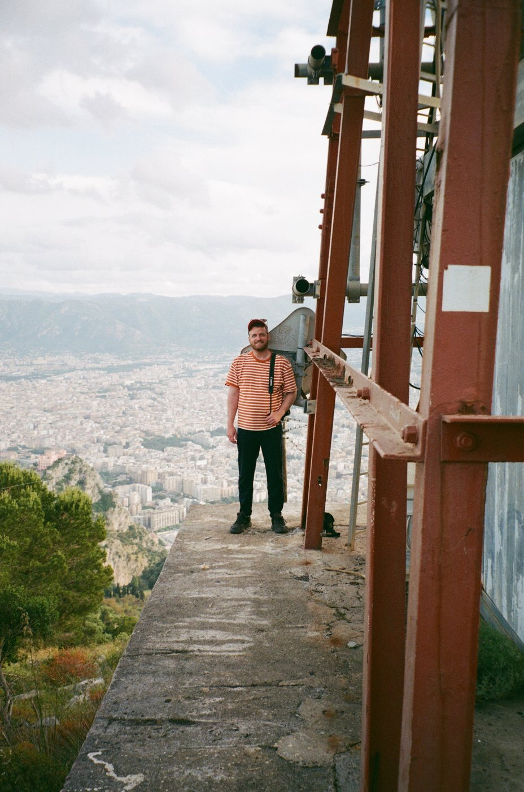

Hi there,
I'm Daniel 👋
Hi there, I'm Daniel 👋
I'm an Amsterdam-based photographer mostly into street photography, but also nature photography, landscapes, and impromptu portraits of friends out and about at social events and parties. I'm originally from Virginia, just outside of Washington D.C., but I've lived in Europe for 10 years, mostly in Amsterdam and a bit in Gothenburg, Sweden.
After a big trip in 2024 around South America, I realized that I should always have my camera with me. That hobby and habit led me to follow an extensive course in analogue photography, film development, and darkroom printing in 2026. Now my hobby has blossomed into a craft and an art form that I engage with deeply.
I created my first zine, Absent Company, released in September 2026 and I hope to continue my journey in analogue photography and art book creation. Besides that, I truly love capturing people's smiles and hugs during parties and events. Contact me if you're interested in my work!